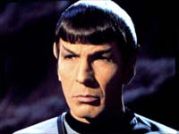
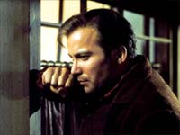
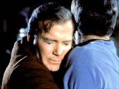
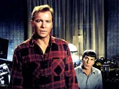
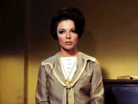
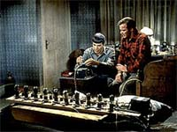

|

|
|
MANCHETE
DO EPISDIO
Episdio
apresenta a encarnao viva
do esprito de Jornada nas Estrelas
Episdio
anterior | Prximo episdio
|
Sinopse:
Data Estelar: 3134.0.
Enquanto a USS Enterprise enfrenta turbulncias geradas por um distrbio temporal que est investigando, uma exploso na ponte fere Sulu. McCoy chamado para prestar os primeiros socorros e injeta no piloto uma pequena quantidade de um poderoso estimulante. O tratamento d resultado, mas acidentalmente todo o contedo restante da hipospray injetado em McCoy, que imediatamente enlouquece, agredindo a tripulao e deixando a ponte aos gritos. Antes que fosse capturado ele consegue chegar sala de transporte e desce ao planeta sobre o qual a nave orbita.
Kirk desce ao planeta liderando um grupo de busca do qual fazem parte Spock, Scott e Uhura, procura de McCoy. L eles se deparam com um artefato aliengena, que segundo Spock a origem das distores temporais que eles vinham investigando. Kirk e Spock estabelecem contato com o artefato que ser auto-intitula o Guardio da Eternidade e que supostamente muito antigo e capaz no s de mostrar o passado, mas de permitir a viagem atravs do tempo. O restante do grupo encontra McCoy, que imobilizado. Entretanto, em um momento de distrao, ele salta atravs do guardio e some em algum lugar do passado da Terra.
 Logo aps McCoy passar pelo portal, o grupo perde o contato com a nave. O Guardio ento informa que a passagem do mdico ao passado fez com que todo o presente de grupo desaparecesse e que apenas a proximidade do portal os manteve sem segurana. Kirk no v alternativa a no ser tentar retornar ao passado e impedir McCoy de mud-lo, trazendo de volta o seu futuro. Ele e Spock se lanam ento para o passado, tentando rastrear o destino de McCoy baseados nos registros que Spock fizera pouco antes do salto do doutor, deixando ordens aos que ficaram para que tentassem novamente caso os dois falhassem.
Os dois chegam Terra, na cidade de So Francisco, no ano de 1930, mas logo encontram dificuldades para se misturar populao local. Enquanto roubam algumas roupas so surpreendidos por um policial local, e em vista das dificuldades para explicar no s o roubo como as orelhas de Spock, so obrigados a atac-lo.
Aps conseguirem se desvencilhar da polcia, eles se escondem no poro de um prdio, onde, aps trocar de roupas, discutem como agir para encontrar McCoy, que a esta altura ainda no desembarcou no passado. Spock no tem como precisar o local e a data da chegada do Doutor uma vez que no h equipamento para recuperar tais informaes em seu tricorder, restando aos dois apenas confiar no acaso para achar o amigo. Antes que possam deixar o local, os dois so surpreendidos por uma mulher chamada Edith Keeler. Kirk diz a ela parte da sua histria, ento Edith oferece trabalho aos dois.
Mais tarde eles descobrem que Keeler uma espcie de benfeitora que dirige uma misso que tem por objetivo alimentar famintos que no tm trabalho. Edith Keeler antes de tudo uma sonhadora, mas que tem teorias muito interessantes, praticamente profticas em relao ao futuro, o que chama a ateno de Kirk.
Edith oferece o aluguel de um quarto aos dois, impressionada com o trabalhado realizado por ambos. Instalados e com um emprego, Spock comea a trabalhar em uma forma de acessar a informao que precisam do tricorder, mas sem muito sucesso, devido carncia de materiais.
Mais tarde, enquanto limpam os refeitrios da misso, Spock v algumas pessoas usando ferramentas que poderiam ser teis. A noite eles arrombam o armrio onde tais ferramentas so guardadas, mas Edith os surpreende. Kirk a convence a deixar Spock us-las, mas usa o incidente para tentar ter mais acesso a Kirk, que ainda um mistrio para ela. Enquanto Spock permanece em seu trabalho, Kirk e Keeler saem para um passeio, onde ela tenta extrair mais informaes do capito, sem sequer suspeitar da verdade.
 Enquanto isto Spock mantm sua ateno no trabalho de recuperar as informaes do tricorder. Ele descobre que Edith Keeler o ponto focal do tempo, o elemento cuja interferncia de McCoy ir alterar, alterando tambm o futuro. Kirk e Spock descobrem que h dois futuros possveis para a moa. Em um deles Keeler ir morrer em um acidente de trnsito, e no outro ela se transformar em uma pessoa de fama nacional. Eles tm agora que descobrir qual deles o correto e agir para corrigir o que McCoy teria alterado, s que isto pode significar que Keeler tenha que morrer. Enquanto isto Spock mantm sua ateno no trabalho de recuperar as informaes do tricorder. Ele descobre que Edith Keeler o ponto focal do tempo, o elemento cuja interferncia de McCoy ir alterar, alterando tambm o futuro. Kirk e Spock descobrem que h dois futuros possveis para a moa. Em um deles Keeler ir morrer em um acidente de trnsito, e no outro ela se transformar em uma pessoa de fama nacional. Eles tm agora que descobrir qual deles o correto e agir para corrigir o que McCoy teria alterado, s que isto pode significar que Keeler tenha que morrer.
Pouco tempo depois, McCoy chega ao ano de 1930 ainda sofrendo os efeitos da droga e com fortes alucinaes. Sem saber disto, Kirk est cada vez mais envolvido com Keeler. McCoy perambula pelas ruas, tentando saber onde est e, ainda convicto de que est sendo perseguido, acaba no resistindo ao efeito da droga e desmaiando.
De volta misso, Spock est trabalhando para tentar recuperar informaes, consertando o equipamento que ele havia improvisado e queimado em sua ltima tentativa de descobrir as respostas que precisa.
Pela manh, McCoy perambula pelas ruas e coincidentemente chega at a misso de Edith Keeler, que ao ver o estado do doutor recolhe-o e o coloca para descansar. Spock, apesar de presente, no v a chegada dele e ignora que McCoy j esteja to perto. Logo depois Spock consegue consertar seu equipamento e descobre que, caso Edith Keeler no morra, a Alemanha ir vencer a 2 Guerra Mundial, logo concluem que McCoy a salvar. Kirk se desespera ao saber que ter que impedir McCoy de salv-la, pois est apaixonado por ela.
 Enquanto isto, McCoy vai se recuperando, sob os cuidados de Keeler, e aos poucos vai recobrando a conscincia, embora permanea bastante confuso, principalmente ao notar o local (e a poca) onde est. Keeler tambm est confusa, mas reconhece em McCoy alguma semelhana com os modos de Kirk e Spock. De qualquer forma, McCoy cai no sono novamente.
noite, Kirk impede um acidente envolvendo Keeler, que tropea em uma escadaria, sendo repreendido por Spock, que percebe que seu capito no est convencido a deixar que a moa morra. No dia seguinte, Keeler passa para ver o progresso de McCoy, que est totalmente recuperado e ainda sem saber que Kirk e Spock encontram-se por perto e sua procura. Ela deixa o doutor e sai para um encontro com Kirk. Eles vo ao cinema, e na sada, enquanto os dois conversam, ela cita a presena de McCoy, deixando Kirk em pnico. Ele deixa Edith na calada e retorna em busca de Spock, mas exatamente neste momento McCoy sai do prdio da misso e encontra seus dois companheiros.
 Edith Keeler, ao ver o grupo reunido, ignora a recomendao de Kirk e pe-se a atravessar a calada na direo deles. Kirk percebe o que ela est fazendo, mas pra na beira da calada ao ver que a moa atravessa a rua e que um automvel vem em sua direo. McCoy tambm percebe e tenta correr em seu socorro, mas Kirk o impede e Keeler atropelada, vindo a falecer.
McCoy est transtornado sem entender por que Kirk o impediu, e este sequer consegue olhar na direo da rua. Imediatamente eles retornam ao planeta do Guardio da Eternidade, onde constatam que seu futuro est de volta.
Comentrios:
Para muitos o maior episdio da srie original, e um dos grandes de toda a franquia (inclusive para alguns o melhor de toda a franquia), pode-se dizer com certeza que este segmento da Srie Clssica to brilhante quanto a mente de seu criador, o to talentoso quanto controverso Harlan Ellison. The City on the Edge of Forever uma impressionante pea de dico cientifica e no ficou na histria por acaso. Mostrar por que nossa tarefa a partir de agora, tarefa to gratificante quanto pretensiosa. Enfim, vamos a ela.
The City on the Edge of Forever comea como um episdio padro da Srie Clssica, onde os primeiros minutos a bordo da ponte da Enterprise fazem a introduo do tema da semana. Porm mesmo em seu inicio j possvel citar a saudvel ausncia do que se convencionou chamar de tecnobabble. Diferente de outras edies (um didtico exemplo negativo The Alternative Factor) aqui no h tempo perdido com a tentativa de gerar explicaes complicadas e absurdas, nem sobre teorias e termos tcnicos que em nada acrescentam ao conjunto. Pelo contrrio, sabemos apenas o que precisamos saber, e o resto mistrio que alimenta o episdio.
 A principal caracterstica deste segmento o drama, e apesar de termos tido alguns episdios muitos bons nenhum deles to fortemente marcante neste sentido quanto "The City", onde este elemento o grande diferencial. Aps o incidente de McCoy e da descida ao mesmo ao planeta do qual a Enterprise est em rbita, Spock e Kirk so trazidos Cidade Beira da Eternidade, ttulo que faz aluso as runas encontradas pelo grupo de descida, runas incrivelmente antigas, como o prprio tempo. Mas seria esta a nica cidade beira da eternidade?
De qualquer forma l que encontraremos o Guardio da Eternidade, sozinho por milnios, e assim como a prpria eternidade, sem comeo e sem fim. Mais uma vez no h explicaes, e ele simplesmente existe, como uma fora da natureza, esperando. A despeito da forma com a qual apresentado, o que mais impressiona a imponncia mstica que tal entidade alcana meramente com as palavras, sem truques de efeitos especiais mirabolantes, e que seriam inalcanveis para os padres da poca. Spock, o smbolo mximo do conhecimento tecnolgico da avanadssima Federao dos Planetas incapaz de sequer supor sua origem e propsito, mas antes que algo mais possa ser dito, McCoy se lana atravs do portal, e como efeito, o presente daquelas pessoas desaparece, deixando-os sozinhos no universo.
Neste ponto o episdio toca em um dos preceitos preferidos de quem gosta de discutir teorias temporais e coisas afins. A teoria de que (se) a hipottica viagem de algum ao passado poderia mudar este passado de forma to violenta. No pretendemos gastar tempo nesta discusso, mas apontar que mais uma vez no h uma palavra de tecnobabble proferida como tentativa de explicar o que no tem explicao. Voltando ao que interessa, devemos concluir que O Guardio da Eternidade um portal, no s para eras passadas, mas para transportar Kirk e Spock para a verdadeira histria do segmento, que far com que nosso capito se confronte com o seu Kobayashi Maru particular. Fim da primeira parte.
Com a chegada de Kirk e McCoy Nova York de 1930, comea a segunda parte do episdio, e esta parte recheada de grandes doses do melhor bom humor produzido pela Srie Clssica. Desde a chegada da dupla de viajantes do tempo sob os olhos surpresos da populao no melhor estilo "Tnel do Tempo", somos brindados com excelentes peas de humor, como a inesquecvel cena do Robin Kirk Hood sendo pego com as calas literalmente na mo, e se isto j no fosse constrangedor o suficiente para um capito da Frota Estelar e seu primeiro oficial, os dois ainda so pegos pela polcia. Ao longo do segmento existem diversos momentos de bom humor que conseguem ser inseridos dentro do contexto de episdio sem jamais transform-lo em algum tipo de comdia pastelo e sobretudo preservando a dignidade dos personagens. O roteiro consegue ser engraado sem expor os personagens ao ridculo e sem perder o foco de seu tema central. Numa palavra: competncia.
 Atravs deste mesmo roteiro Kirk tem a chance de mostrar toda sua sagacidade ao entender que precisa motivar seu primeiro-oficial a ir alm das possibilidades, e mexe com os brios do Vulcano Spock para que ele se sinta motivado a transpor a lgica. Kirk age como um verdadeiro lder, que conhece a capacidade de seus homens a sabe como aplicar tal capacidade agindo como um elemento catalisador, e antes de tudo alimentando a esperana ante ao aparentemente impossvel. Frase a frase, palavra a palavra, a qumica entre Shatner e Nimoy funciona de forma soberba, trabalhando junto com o roteiro, agregando valor a cada linha deste, mas Shatner est em plena sintonia com seu personagem e faz aflorar todas as qualidades que se esperam de um grande comandante.
Finalmente somos apresentados a Edith Keeler, o ponto focal no tempo, como mais tarde diria Spock. Mas ela muito mais que isso. Keeler a personificao da perfeio espiritual, da bondade que esperamos ver em cada um de nos, da esperana de que dias melhores esto por vir. Ela acredita em ideais de justia, sinceridade, igualdade e acima de tudo no futuro. Como j foi dito vrias vezes, um anjo. Um exagero de utopia? Com certeza sim, mas uma utopia que apresenta com exatido a essncia de tudo o que Jornada nas Estrelas costumava representar, pois mais que uma srie de aventuras, Jornada uma srie sobre a redeno da humanidade. Justamente a quimera que fez com que muitos se tornassem fs de forma to apaixonada. Neste sentido, se Jornada nas Estrelas tem uma alma, esta alma se chama Edith Keeler.
medida que Kirk e Spock vo se embrenhando na soluo de seu problema, nosso capito vai se envolvendo mais e mais com Keeler, o que se torna um dilema quando eles descobrem que ela deve morrer. Mais uma vez o roteiro se mostra brilhante. Como Spock frisa, Edith est certa em seu modo de ver a vida, entretanto na hora errada. Audaciosamente olhando para o passado, Jornada encontra um ser imensamente avanado, no tecnologicamente mas espiritualmente falando. Entretanto, no maior de todos os paradoxos, este ser precisa deixar de existir para garantir o futuro no qual Edith acredita.
Um ctico poderia dizer que neste ponto o episdio aponta para uma tentativa de justificar a inevitabilidade da guerra, uma vez que a atitude de Keeler considerada a causa de um futuro imperfeito, entretanto eu prefiro ver isto como uma homenagem a pessoas que lutaram por um mundo melhor, sem violncia e em nome deste projeto deram suas vidas, gente como Ghandi e Luther King, que morreram em nome de um ideal para muitos alm da viso de seu tempo. Se Edith no chega a ser uma mrtir na essncia da palavra, ela com certeza representa o que significa o sacrifcio de um em nome das necessidades de muitos.
 Kirk, apaixonado por Edith, se v frente a um complicadssimo dilema pessoal. Ele ama Edith, e tudo que ela representa e sente que ela mais do que ningum merece viver, mas sabe que ela precisa morrer para o futuro que no qual ambos acreditam venha a se tornar real. Ele deve ser o Guardio da Eternidade e para isto sacrificar Edith Keeler, e junto com ela o que seu corao quer preservar a qualquer custo. O heri desce ao nvel do homem, do ser humano com fraquezas e virtudes que se misturam e se confundem. Ele precisa escolher entre o amor e o dever.
Precisa tomar uma deciso e sua deciso custar milhes de vidas (que ele no conhece) ou uma nica vida (que ele ama). Ele hesita, vacila, sofre, e deste sofrimento emerge o verdadeiro heri. O Kirk que retornaria mais tarde Enterprise seria bem diferente daquele que chegou ao planeta do Guardio da Eternidade, pois como qualquer ser humano ele no imune s conseqncias de seus prprios atos. O segmento age e reage junto com seus personagens, afetando-os no processo e transformando-os, e como nenhum outro transforma James Kirk em um personagem tridimensional, que como todos ns tem anseios e dvidas e , por isso mesmo, crvel. E deste processo que surge um heri de carne e osso, no o homem sem medo, mas o homem que continua apesar do medo, uma faceta de James T. Kirk que s voltaria a ser alcanada em tal profundidade em "Jornada nas Estrelas II: A Ira de Khan".
Mas Kirk no est s. Spock est a seu lado, como sempre esteve e como sempre estar. Entretanto, nunca a participao do Vulcano foi to relevante em seu papel de apoio a Jim como aqui. Spock no est presente somente para ser um banco de dados ambulante ou prover solues inesperadas e embora em primeira instncia ele ocupe (bem) este (necessrio) papel, ele exerce outro papel bem mais importante. O Vulcano na verdade a conscincia de Kirk, e ter o papel de gui-lo pelo caminho correto as ser seguido, para isto sabe que precisa ser firme. Entretanto Spock conhece seu amigo e sabe o que ele est sentindo, e coloca-se antes de tudo como a apoio que sabe que Jim ir precisar quando chegar a hora. Spock to firme quanto necessrio e to suave quanto possvel, mostrando que os anos de convivncia com os humanos fizeram com que ele conhecesse bem seno todos, ao menos um, James Kirk. Embora sua cultura e sua racionalidade deixem claro o que deve ser feito, ele entende e respeita a situao de seu oficial superior e seu amigo.
Ao confessar a seu subordinado, um ser totalmente racional e lgico, sua condio de fragilidade, Kirk se expe de maneira nica a Spock, e este responde no com recriminao, mas oferecendo-lhe toda a solidariedade de que seu amigo precisa, fazendo com que a partir deste momento a ligao de amizade de ambos ficasse ainda mais sedimentada de forma inequvoca em laos extremamente slidos.
Assim como o prprio tempo, o episdio precisa seguir. Finalmente chega a hora em que Edith Keeler dever completar seu destino. Esta cena antolgica e dispensa qualquer tipo de comentrio. E apenas por dever do oficio que devo comentar como mais uma vez o roteiro consegue ser brilhante e rico, pois irnico notar que foi a reunio dos trs amigos, Kirk, Spock e McCoy, que propiciou a condio que levou morte de Edith Keeler. No h palavras para descrever a cena onde Kirk impede McCoy de salv-la, e enquanto o abraa ele no precisa olhar para trs, mais do que isto, ele no quer olhar para trs.
The City on The Edge of Forever chega ao seu fim e mais uma vez o universo foi salvo. A cultura de tubos de barro e platinados de zinco foi salva e chegar s estrelas. A depresso e as guerras foram deixadas para trs, conforme Edith previra. James Kirk voltaria a salvar o universo muitas outras vezes, mas jamais o universo de Jornada seria o mesmo aps este momento. O que fica? Mais uma vez uma mensagem de f de que a humanidade poder um dia superar seus problemas e elevar-se.
Por que The City... atingiu tal patamar de sucesso? Por que no uma episdio sobre viagem temporal simplesmente, mesmo que este seja um elemento fundamental da trama. Mas no passamos nosso tempo debruados sobre paradoxos temporais frios e insensveis. Este segmento fala na verdade sobre as coisas que nos motivam e nos do esperana, sobre f no futuro e sobre a condio humana. Para isso expe o ser humano atravs do que temos de mais genuno: seus sentimentos. Aqui no h confronto homem x mquina, mas homem versus homem. Ele ir atingir cada um de ns em nveis de intensidade e profundidade diferentes, mas certamente aquele que no se preocupar com detalhes de fsica quntica e se deixar levar pela verdadeira mensagem sofrer o impacto mais direto da sua mensagem.
Pequenos reparos poderiam ser feitos ao segmento, como a atuao equivocada de Deforest Kelley e a inexplicvel presena de Uhura e Scott no grupo de descida. Mas de forma alguma isso diminui um milsimo que seja a magnitude deste episdio. Roteiro impressionante de Harlan Ellison, uma presena magnfica de Joan Collins, atuao poderosa do sempre criticado (com razo) William Shatner e competentssima de Nimoy, temperados pela inspirada trilha sonora de Courage e pela direo de Joseph Pevney do vida a esta edio de Jornada nas Estrelas premiada com o Hugo de 1968, ou talvez os mesmos fluxos temporais que levaram Kirk e Spock ao encontro de McCoy tenham conspirado para transformar este segmento no episodio alm da eternidade, referncia absoluta para quem quer conhecer Jornada nas Estrelas no que ela tem de mais profundo e atraente.
Citaes:
Kirk - "What are you?"
("O que voc?")
Guardio da Eternidade - "I am the Guardian of Forever."
("Sou o Guardio da Eternidade.")
Kirk - "Are you machine or being?"
("Voc mquina ou ser?")
Guardio da Eternidade - "I am both and neither. I am my own beginning, my own ending."
("Eu sou ambos e nenhum. Sou meu prprio princpio, meu prprio fim.")
Spock - "You were saying you'll have no trouble explaining it."
("Voc dizia que no teria problemas em explicar.")
Kirk - "My friend is obviously Chinese."
("Meu amigo obviamente chins.")
Kirk - "You were actually enjoying my predicament back there. At times, you seem quite human."
("Voc estava se divertindo com minha confuso l atrs. Tem vezes que voc bem humano.")
Spock - "Captain, I hardly believe that insults are within your prerrogative as my commanding officer. "
("Capito, acho difcil que insultos estejam dentro de sua prerrogativa como meu oficial comandante.")
Edith Keeler - "I don't pretend to tell you how to find happiness and love when every day is a struggle to survive, but I do insist that you do survive because the days and the years ahead are worth living for."
("No vou fingir dizer a vocs como achar felicidade e amor quando todo dia uma luta para sobreviver, mas insisto em que sobrevivam, porque os dias e anos frenet valero a pena serem vividos.")
Kirk - "Spock ... I believe ... I'm in love with Edith Keeler."
("Spock... Acho... que estou apaixonado por Edith Keeler.")
Spock - "Jim, Edith Keeler must die."
("Jim, Edith Keeler precisa morrer.")
McCoy - "You deliberately stopped me, Jim. I could have saved her. Do you know what you just did?"
("Voc deliberadamente me impediu, Jim. Eu poderia t-lo salvo. Voc sabe o que acabou de fazer?")
Spock - "He knows, Doctor. He knows."
("Ele sabe, doutor. Ele sabe.")
Trivia:
 Apesar de seu sucesso, este episdio o ponto focal de um desentendimento entre Harlan Ellison, autor do roteiro original, e Gene Roddenberry. Conta a lenda que Ellison, extremamente temperamental, no gostava de ser reescrito por ningum. Isto fez com que seu roteiro, que foi escrito originalmente na mesma poca de The Cage, ficasse indo e vindo por meses, pois a cada modificao feita por Roddenberry para adequ-lo s necessidades de uma srie de TV, e aos seus ideais, mais utpicos do que os de Ellison, ele reescrevia totalmente o roteiro. No fim a verso que foi gravada continha modificaes no aprovadas por ele. Apesar de seu sucesso, este episdio o ponto focal de um desentendimento entre Harlan Ellison, autor do roteiro original, e Gene Roddenberry. Conta a lenda que Ellison, extremamente temperamental, no gostava de ser reescrito por ningum. Isto fez com que seu roteiro, que foi escrito originalmente na mesma poca de The Cage, ficasse indo e vindo por meses, pois a cada modificao feita por Roddenberry para adequ-lo s necessidades de uma srie de TV, e aos seus ideais, mais utpicos do que os de Ellison, ele reescrevia totalmente o roteiro. No fim a verso que foi gravada continha modificaes no aprovadas por ele.
No bastasse isto, Ellison tinha um pseudnimo, "Cordwainer Bird", que usava para creditar projetos do qual participava, mas que considerava ter sido alterado demais por seus produtores. Quando viu que no teria sucesso em seu cabo-de-guerra com Rodenbbery, quis usar tal pseudnimo para assinar o episdio, s que Gene no permitiu e creditou o seu nome verdadeiro. Ellison tornou-se ento seu inimigo mortal e nem mesmo o fato de o episdio ter ganhado o Hugo, ou mesmo aps a morte de Gene anos mais tarde, colocou fim sua ira.
Ainda sobre o tal roteiro de Ellison, nele seria um viciado em drogas que retornaria ao passado e causaria os eventos que iriam alter-lo. Alm disso, Kirk decidiria por salvar Keller e viver com ela no passado da Terra, e caberia a Spock impedi-lo de salv-la, consertando o passado.
Ganhador de sete prmios Hugo e 3 Nebula, Harlan Ellison tambm carrega uma longa lista de batalhas judiciais. Outros pseudnimos de Ellison: Nalrah Nosille, Sley Harson, Landon Ellis, Derry Tiger, Price Curtis, Paul Merchant, Lee Archer, E.K. Jarvis e Clyde Mitchell.
Na trilha deste episdio vieram:
Para srie animada:
Yesteryear. Escrito por Dorothy C. Fontana e que foi ao ar em 15 de Setembro de 1973. Nesta estria, Spock emerge do Guardio da Eternidade para descobrir que a Historia o dava como morto, fato que teria acontecido quando ela era uma criana em Vulcano durante a realizao de um teste conhecido como Kahs-wan. Ele viaja ento ao ano de 2237 para salvar sua prpria vida.
Novelas:
Yesterday's Son, por A.C. Crispin
Novela publicada pela Pocket Books em 1983, onde Spock retorna ao 5000 anos na passado do planeta Sarpeidon (All Your Yesterdays) para encontrar seu filho, Zar, nascido de sua breve unio com Zarabeth.Enquanto isto a Enterprise deve defender o planeta de um ataque Romulano, ou ento destruir o Guardio para que este no caia em mos inimigas. Uma leitura interessante mas sem o mesmo brilho de The City...".
"Time For Yesterday", por A.C. Crispin
Nesta histria alteraes no curso normal do tempo fazem com que a Frota Estelar suspeite de algum tipo de mau funcionamento e envia Kirk, Spock e McCoy em uma misso para contactar o Guardio e descobrir o que h de errado. Mais uma vez o trio voltar ao passado e encontrar Zar, o nico que parece poder se comunicar com o Guardio. No Brasil foi publicado pela Aleph com o ttulo "O Filho de Spock".
"Imzadi", por Peter David
Durante negociaes com uma raa chamada Sindareen, Deanna Troi morre misteriosamente. Um ano depois o comandante Riker planeja uma viagem atravs do tempo com o objetivo de salv-la.
Ficha
tcnica:
Escrito por Harlan Ellison
Direo de Joseph Pevney
Exibido em 06/04/1967
Produo: 28
Elenco:
William Shatner como James Tiberius Kirk
Leonard Nimoy como Spock
DeForest Kelley como Leonard H. McCoy
James Doohan como Montgomery Scott
Nichelle Nichols como Uhura
George Takei como Hikaru Sulu
Elenco convidado:
Joan Collins como Edith Keeler
David L. Ross tenente Galloway
John Harmon como Rodent
Hal Baylor como Policial
Bart La Rue vomo a voz do Guardio da Eternidade
John Winston como Chefe Kyle
Episdio
anterior | Prximo episdio
|